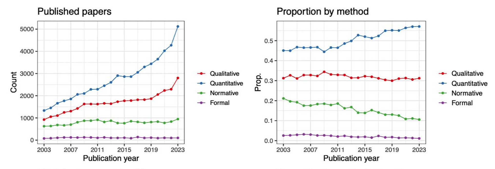
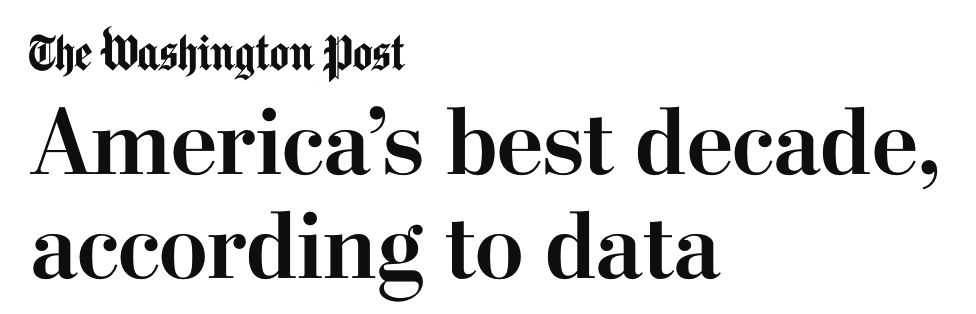
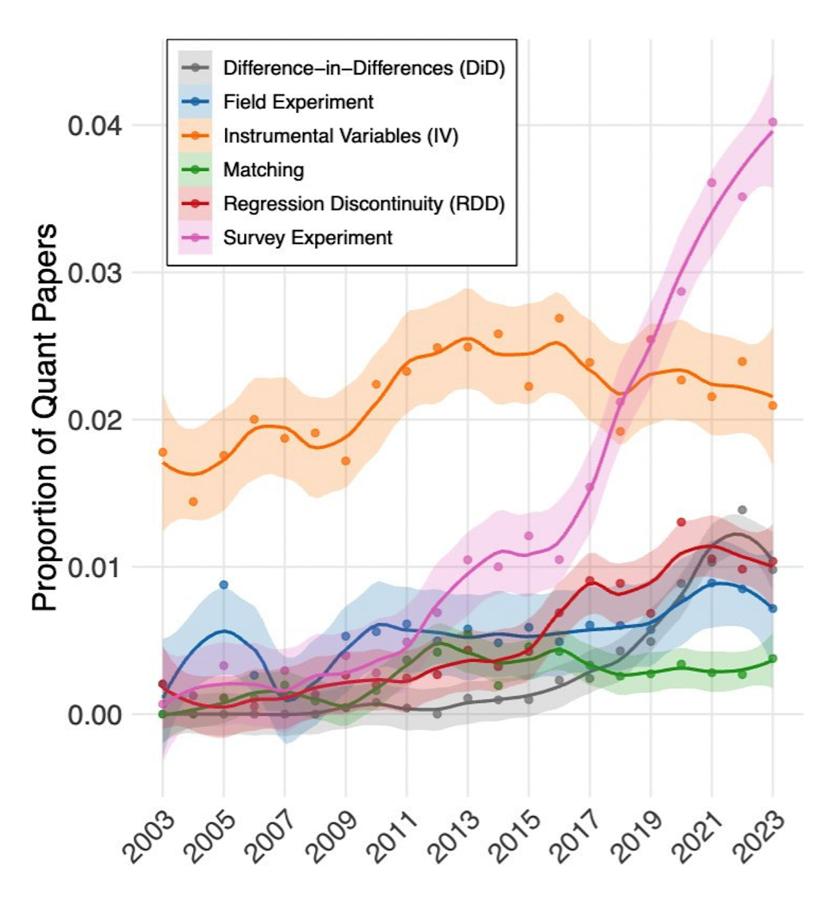

| Country | Continent | Year | Life Expectancy | GDP per Capita |
|---|---|---|---|---|
| Afghanistan | Asia | 2007 | 43.8 | 974.6 |
| Albania | Europe | 2007 | 76.4 | 5937.0 |
| Algeria | Africa | 2007 | 72.3 | 6223.4 |
| Angola | Africa | 2007 | 42.7 | 4797.2 |
| Argentina | Americas | 2007 | 75.3 | 12779.4 |
| Australia | Oceania | 2007 | 81.2 | 34435.4 |
Social Data Science
Statistical Reasoning: Interpreting Patterns in Data
Olgahan Çat | Slides: guqatar.olgahan.com
Goals
- Find out whether data automatically tells us what is true or not
- Distinguish descriptive, predictive, and causal claims
- Ask better questions when someone makes a data-based claim
Why statistical reasoning matters?
- Intellectual skill: Reason carefully about patterns in life
- Policy: Evaluate evidence behind decisions that affect society
- Private sector: Use data responsibly to add value
- Academia: Read, interpret, and contribute to social science research
Proportion of Political Science papers by method
 Source: Carolina Torreblanca
Proportion of Political Science papers by method
- Does not mean quantitative methods are better
- Does not mean you have to use quantitative methods
- But it is probably a good idea to learn some statistics to engage with the discipline
“According to data…”
Do data speak?
 
“According to data…”
Do data speak?
- Implied: data reveals objective truth
- Reality: data requires interpretation
Variables
Characteristics that vary
Source: Gapminder Foundation
Types of Variables
- Nominal/categorical: Cannot be ordered
- Region, conflict types
- Ordinal: Ordered
- Liberal < Moderate < Conservative
- Numerical: Ordered + equidistant
- Age, GDP, number of casualties
Political Regimes
Interactive Map
Practice
Varieties of Democracy’s regime type measure:
- 0: Closed autocracy – No multiparty elections
- 1: Electoral autocracy – De-jure elections but not free and fair
- 2: Electoral democracy – Free and fair elections with some flaws
- 3: Liberal democracy – Free and fair elections guaranteed
Descriptive Statistics
Summarizing Patterns: Categorical data
- Counts / frequencies: How many observations fall in each category.
- Percentages / proportions: Useful to compare groups.
- Mode: The most common category.
Descriptive Statistics: Categorical variables
| Variable | Category | Count | Percent |
|---|---|---|---|
| make | Toyota | 10 | 10.1 |
| BMW | 5 | 5.1 | |
| Kia | 5 | 5.1 | |
| Mercedes | 5 | 5.1 | |
| origin | Japan | 27 | 27.3 |
| Germany | 20 | 20.2 | |
| PR China | 16 | 16.2 | |
| UK | 11 | 11.1 | |
| type | SUV | 49 | 49.5 |
| Sedan | 30 | 30.3 | |
| Coupe | 13 | 13.1 | |
| Hatchback | 7 | 7.1 |
Data source: https://github.com/profmusgrave/qatarcars
Descriptive Statistics
Summarizing Patterns: Numerical data
- Measures of central tendency:
- Mean (average): Add values, divide by count
- Median: Middle value when ordered
- Mode: Most common value
- Measures of spread / variability:
- Range: Difference between max and min
- Standard deviation
Descriptive Statistics: Numerical variables
| Variable | mean | sd | min | max |
|---|---|---|---|---|
| length | 4.71 | 0.30 | 3.80 | 5.47 |
| width | 1.93 | 0.30 | 1.67 | 4.63 |
| height | 1.58 | 0.20 | 1.12 | 2.00 |
| seating | 5.04 | 1.22 | 2.00 | 8.00 |
| trunk | 449.80 | 268.31 | 0.00 | 1233.00 |
| economy | 8.91 | 3.63 | 1.20 | 22.50 |
| horsepower | 329.34 | 294.09 | 76.00 | 1973.00 |
| price | 840909.91 | 3632523.41 | 37400.00 | 33000000.00 |
| mass | 1807.33 | 462.98 | 945.00 | 2746.00 |
| performance | 6.81 | 2.57 | 2.40 | 14.00 |
Data source: https://github.com/profmusgrave/qatarcars
Predictive Analysis
Can we forecast/predict outcomes?
- Use patterns to predict an outcome.
- Example: Next election, would we expect a high or low turnout at a university town?
Toy example
New university in town
- Suppose turnout differs by age based on past data:
- Young voters (18–25): 40% turnout
- Everyone else: 65% turnout
- We can roughly predict the turnout based on share of young voters in town
Predictive Analysis
- Widely used in private sector: credit scoring, fraud detection, demand forecasting
- Also common in public policy: forecasting crime, turnout, ER visits
- Uses many variables with machine learning models
- What if we want to know why?
Causal Inference
Going beyond associations
- The ultimate question:
- does changing X change Y?
- X: Independent variable
- Y: Dependent variable

A Toy Example
Foreign Aid and Political Stability
- Question:
- Does foreign aid reduce political unrest?
- Outcome: number of anti-government protests
A Naive Comparison
Treated vs. Untreated Countries
| Country | Aid status | Observed protests | Protests if received aid | Protests if no aid | Actual effect of aid |
|---|---|---|---|---|---|
| A | |||||
| B | |||||
| C | |||||
| D | |||||
| E | |||||
| F |
A Naive Comparison
Treated vs. Untreated Countries
- Naive conclusion:
- Foreign aid increases protests
- ⚠️ But should we believe this?
What Might Be Going Wrong?
Aid Is Not Random
Foreign aid might be sent to:
- Politically unstable countries
- Which introduces selection bias
These countries would likely have more protests anyway
We are comparing different kinds of countries.

Counterfactual Thinking
The Missing Comparison
- The counterfactual asks:
- What would have happened if X did not change/did not take place?
- In this example:
- A country received aid
- Counterfactual: What if it had not?
Counterfactuals
Hypothetical research questions
- Effect of civil war on a country’s economic growth
- Whether mailers affect voting turnout or not
- If it wasn’t for Qatar, would Messi win the World Cup?
Interactive Intuition
Toggle Between Worlds
- Imagine switching between:
- A world with aid
- A world without aid
- This is the core idea behind causal inference.
Interactive Intuition
Toggle Between Worlds
| Country | Aid status | Observed protests | Protests if received aid | Protests if no aid | Actual effect of aid |
|---|---|---|---|---|---|
| A | |||||
| B | |||||
| C | |||||
| D | |||||
| E | |||||
| F |
How do we detect counterfactuals?
Bad news: we can’t
Bad news: we can’t
Fundamental Problem of Causal Inference: We never observe the counterfactual
Good news: we can impute them
Good news: we can impute them
Causal inference = imputing the counterfactual and estimating the effect
Imputing the counterfactual
- Qualitatively
- Case studies and process tracing
- Comparing plausible alternative explanations within cases
- Case studies and process tracing
- Quantitatively
- Experiments
- Observational studies
Experiments
Gold standard?
- Random assignment ensures no selection bias
- Some call experiments as gold standard - we will come back to it in a minute
Let’s think about this intuitively
An example from a field experiment in Pakistan (Cheema et al. 2022, APSR)
- How can we close persistent gender gaps in political participation?
- Male household members as “gatekeepers” of women’s participation
- Targeting women -> no effect
- Targeting male household members -> increase in women’s turnout
An example

Figure: A random sample of households in Pakistan
An example
When you assign a household to treated, you are realizing the household’s potential outcome under treatment
When you assign a household to control, you are realizing the household’s potential outcome under control
With random assignment, naive comparison approximates the actual effect.

Experiments
Limitations
- Why not run experiments for everything?
- Practical constraints and feasibility: cannot randomly assign many social conditions
- Ethical considerations: Harm, consent, fairness
- Good policies tend to be targeted, not random
- This creates selection bias
Revisiting our research questions
Can we use experiments?
Effect of civil war on a country’s economic growth
Whether mailers affect voting turnout or not
If it wasn’t for Qatar, would Messi win the World Cup?
Of the hypothetical research questions above (civil war, mailers, and World Cup), only one (mailer) is amenable to randomization.
Matching
Comparing similar units
Idea: Compare units that are similar in important ways, except for whether they received the treatment
Example: Do UN peacekeeping missions reduce civilian deaths?
- Problem: Peacekeepers might be sent to more violent conflicts
- Solution: Compare conflicts with similar violence levels
- Some with peacekeepers | some without
Discontinuity Designs
Comparing units near a cutoff
- Some policies use clear rules or thresholds
- Welfare programs, exams
- Example: Does tutoring improve student performance?
- Selection bias: Wealth, family, neighborhood
- Policy: Students scoring 70 or below get tutoring
- Compare students just below and just above 70
Discontinuity designs
Compare units around a threshold

Source: Andrew Heiss
Difference in Differences
Comparing changes over time
- Idea:
- Focus on differences in trends, not levels
- Example: How do sanctions affect human rights violations?
- Two countries: One sanctioned (treated), one not sanctioned (control)
- Key assumption: Both countries followed similar trends before sanctions
Difference in Differences
Compare units that follow similar trends the treatment

Source: Kevin Goulding
Other designs for observational data
- Instrumental variable
- Synthetic control
- Shared goal: imputing the counterfactual using the appropriate design
Proportion of Quantitative Political Science papers by research design

Source: Carolina Torreblanca
Last but not least
Sample effect \(\neq\) Population effect
- We almost always study a sample, not the whole population
- A sample might look different from the full population
- Statistics gives us tools to estimate population patterns and measure uncertainty
Last but not least
Data work requires computation
- Computers do the work for us
- Learning some programming is unavoidable (R, Python, Stata)
- Luckily, LLMs (ChatGPT, Claude) lower the learning curve
- Use with care: they can be confidently wrong
Takeaways
Why statistics matters?
- Data don’t speak for themselves: they are produced, measured, and interpreted by humans.
- Statistical reasoning is powerful: naive interpretation can mislead.
- Analytical caution is a marketable skill anywhere data are used: policy, social science literacy, private sector, real-world decision-making.
Thank You
Questions & Discussion
- Thank you for your attention!
- Feedback, questions, connections: olgahan@brown.edu